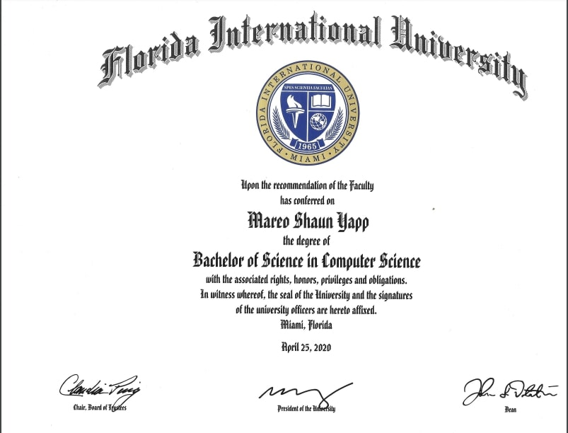

I graduated from Florida International University in May of 2020.
I spent three years earning my B.S. degree in Computer Science.
I graduated with a 3.02 GPA.
Key Achievements: Creating a prototype of Twitter called BlueJay in Java. Creating a system to enlarge
and manipulate images in C#.
Relevant Coursework: Web development, software engineering, database management.

I attended for two years with a 3.65 GPA.
I majored in Computer Science and minored in Accounting.
I transferred to FIU to obtain US citizenship.
Key Achievements: Recreating the minigame 2048 in Python code.